Key Takeaways
- This policy helps to control whether the recall feature is enabled or blocked.
- Helps to protect user privacy by restricting activity snapshots.
- Helps to support security and compliance requirements.
- Controls unnecessary data storage usage on devices.
- Controls recall access for privacy and security.
Hey, let’s discuss about manage Windows recall availability for end users on managed devices using Intune. This policy setting allows you to determine whether the Recall optional component is available for end users to enable on their devices. It decides if users are allowed to enable recall on their devices or not. By default, Recall is disabled for managed commercial devices.
Table of Contents
What are the Advantages of this Policy?
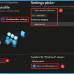
This policy controls whether the Windows recall feature is available on managed devices. This policy will be disabled for managed devices this means recall will not be available for managed devices.
1. This policy helps to prevent the automatic capture of user activity and sensitive data.
2. Helps to reduce risk of sensitive information being stored as snapshots on the device.
3. Helps with privacy and security compilance.
Manage Windows Recall Availability for End Users on Managed Devices using Intune
This policy helps to determine whether the recall feature in Windows is available or not for managed devices. This helps to prevent the automatic capture of activity done by the user and to protect sensitive data. Thereby increases security.
How to Create a Policy
To start the Policy Creation, open the Microsoft Intune Admin center. Then go to Devices and then go to the Configuration and click on the down arrow of Create and choose New Policy.

Creating the Profile
Profile creation is the necessary step that helps you to assign the policy to the appropriate platform and Profile. Here I would like to configure the policy to Windows 10 and later platform and the settings catalog profile. Then click on the Create button.

Naming the Policy
The Basics Tab is used to provide a name and description for the policy. Using the name of a policy, it is easy to identify the policy later. Here, Name is mandatory and Description is an optional step. After adding this, click on the Next button to continue.
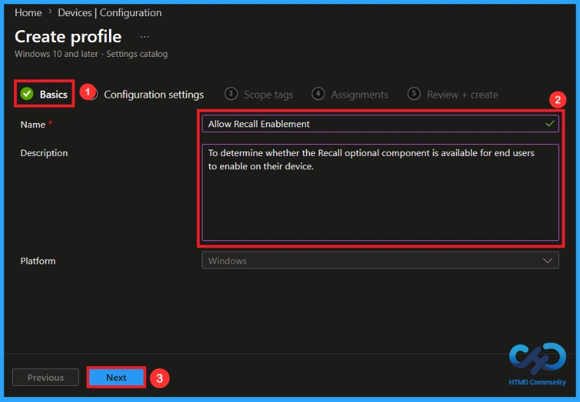
Configuration Settings in this Policy
With Settings Picker, you can use the Configuration Settings Tab. On this tab, you can click on the +Add Settings hyperlink to get the Settings Picker. The settings picker shows a huge number of settings. Here, I would like to select the settings by browsing by policy name (allow recall enablement), there you can see the Windows AI category and enable the settings name.
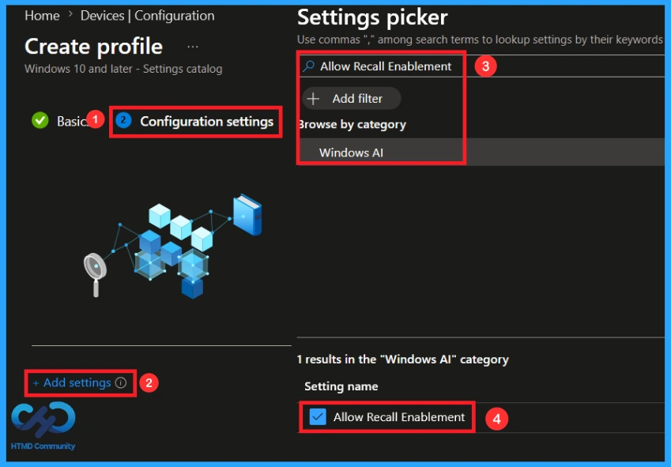
Enabling this Policy
While configuring this policy, end users will be able to choose if they want to save snapshots of their screen and use Recall to find things they’ve seen on their device. Recall will be available on their device when enabled.
NOTE: If the policy is enabled, end users will have Recall available on their device. Depending on the state of the DisableAIDataAnalysis policy (Turn off saving snapshots for use with Recall).
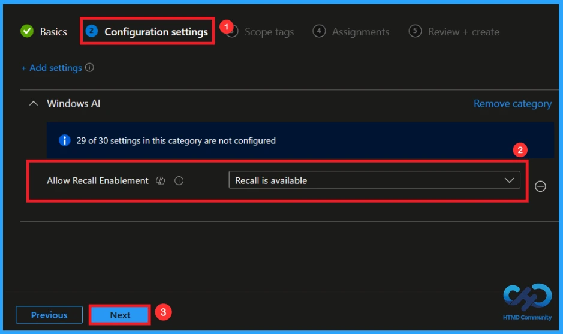
Disabling this Policy
If this policy is disabled, the Recall component will be in disabled state and the bits for Recall will be removed from the device. If snapshots were previously saved on the device, they’ll be deleted when this policy is disabled. Removing Recall requires a device restart.
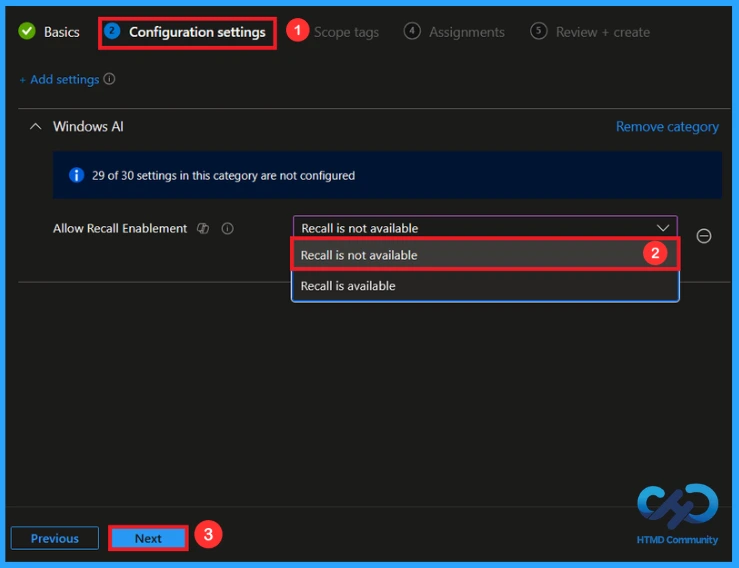
Scope Tag
With scope tags, you create a restriction to the visibility. It helps to organise resources as well. Here, I would like to skip this section, because it is not mandatory. Click on the Next button.

Assignments Tab for Selecting Group
To assign the policy to specific groups, you can use the Assignment Tab. Here I click, +Add groups option under Included groups. I choose a group from the list of groups and click on the Select button.

Finalising this Policy
Before completing the policy creation, you can review each tab to avoid misconfiguration or policy failure. After verifying all the details, click on the Create Button. After creating the policy, you will get a success message allow recall enablement policy has been created successfully.
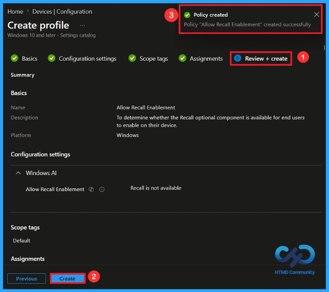
Monitoring Status
The Monitoring Status page shows whether the policy has succeeded or not. To quickly configure the policy and take advantage of the policy sync the assigned device on Company Portal. Open the Intune Portal. Go to Devices > Configuration > Search for the Policy. Here, the policy shows as successful.
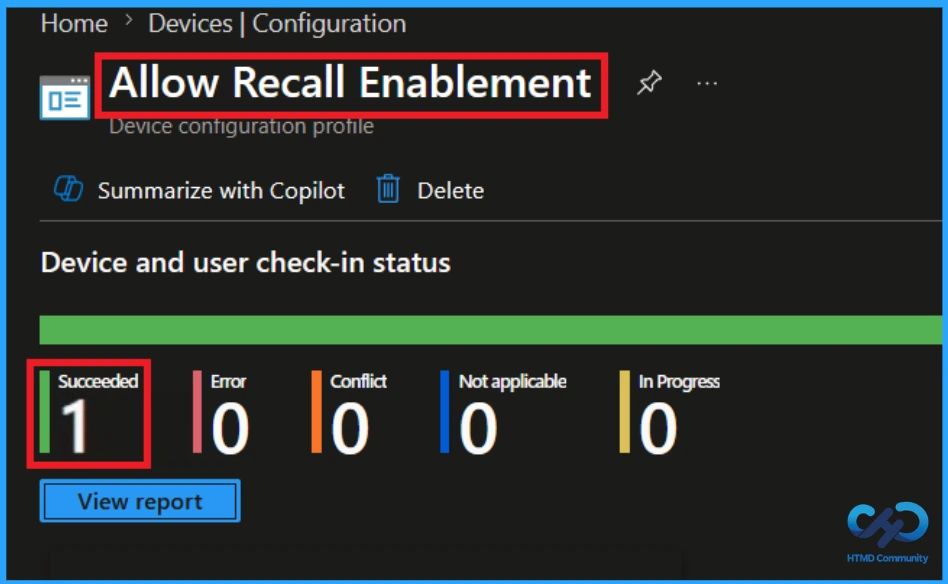
Client-Side Verification
To confirm if a policy has been applied, use the Event Viewer on the client device. Go to Applications and Services Logs > Microsoft >Windows >Device Management > Enterprise Diagnostic Provider > Admin. From the list of policies, use the Filter Current Log option and search for Intune event
MDM PolicyManager: Set policy int, Policy: (AllowRecallEnablement), Area: (WindowsAI),
EnrollmentID requesting merge: (EB427D85-802F-46D9-A3E2-D5B414587F63), Current User:
(Device), Int: (0x0), Enrollment Type: (0x6), Scope: (0x0).
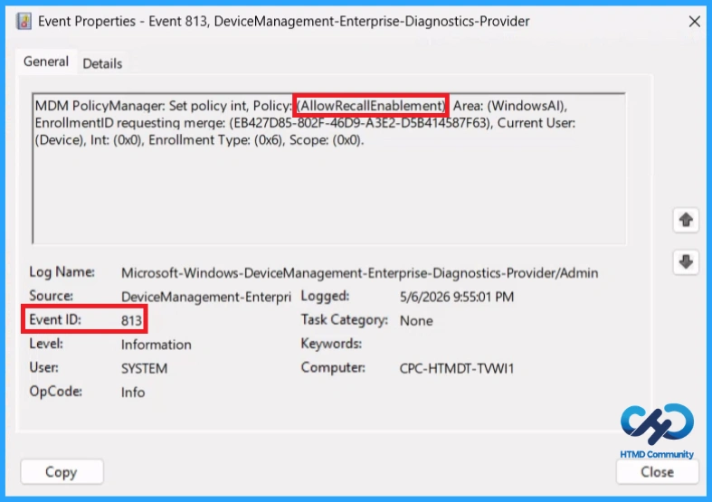
Configuration Service Provider (CSP)
The Policy Configuration Service Provider (CSP) is a feature used by organisations to manage and control settings on Windows 10 and 11 devices. It explains what each policy does, what settings or values can be used, and how it connects to older Group Policy settings (Group Policy Mapping details).
Description Framework Properties:
| Property Name | Property value |
|---|---|
| Format | int |
| Access Type | Add, Delete, Get, Replace |
| Default Value | 1 |
Allowed Values:
- 0 – Recall isn’t available.
- 1 (Default) – Recall is available.
Group policy mapping:
| Name | Value |
|---|---|
| Name | AllowRecallEnablement |
| Friendly Name | Allow Recall to be enabled |
| Location | Computer Configuration |
| Path | Windows Components > Windows AI |
| Registry Key Name | SOFTWARE\Policies\Microsoft\Windows\WindowsAI |
| Registry Value Name | AllowRecallEnablement |
| ADMX File Name | WindowsCopilot.admx |
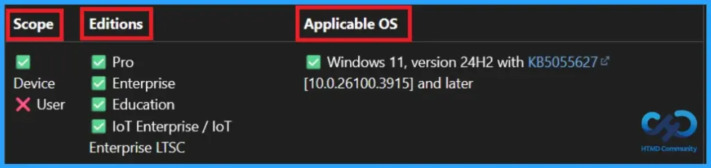
How to Remove an Assigned Group from this Policy
If you need to remove a group from a policy assignment for security updates. Open the policy from the configuration tab and click on the edit button. Then, click on the Remove button. Click Review + Save after making the changes.
For detailed information, you can refer to our previous post – Learn How to Delete or Remove App Assignment from Intune using by Step-by-Step Guide.
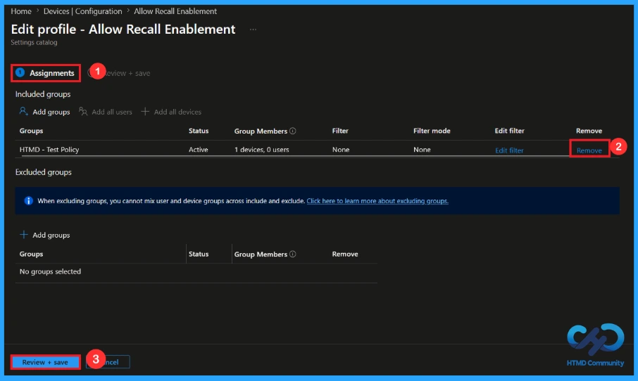
How to Delete this Policy from Intune Portal
If you want to delete this policy for any reason, you can do it easily. First, search for the policy name in the configuration section. When you find the policy name, click the 3-dot menu next to it and tap the Delete option.
For more information, you can refer to our previous post – How to Delete Allow Clipboard History Policy in Intune Step by Step Guide.
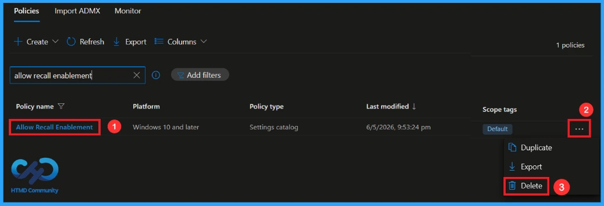
Need Further Assistance or Have Technical Questions?
Join the LinkedIn Page and Telegram group to get the latest step-by-step guides and news updates. Join our Meetup Page to participate in User group meetings. Also, Join the WhatsApp Community and WhatsApp Channel to get the latest news on Microsoft Technologies. We are there on Reddit as well.
Author
Anoop C Nair has been Microsoft MVP from 2015 onwards for 10 consecutive years! He is a Workplace Solution Architect with more than 22+ years of experience in Workplace technologies. He is also a Blogger, Speaker, and Local User Group Community leader. His primary focus is on Device Management technologies like SCCM and Intune. He writes about technologies like Intune, SCCM, Windows, Cloud PC, Windows, Entra, Microsoft Security, Career, etc.